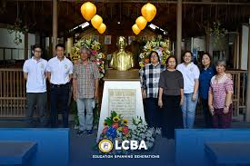

Laguna College of Business and Arts (LCBA) is a respected educational institution in Laguna dedicated to providing quality education that develops intellectual competence, leadership, and social responsibility. The college prepares students to become professionals who contribute positively to society.

LCBA envisions to become an autonomous higher education institution committed to producing holistically developed globally competitive lifelong learners.
Inspired by Dr. Jose Rizal’s educational principles, LCBA Education upholds a balanced curriculum towards development for a better quality of life.
LCBA commits itself to the total human development of the learners through value-laden and competency-based education, policy-relevant research, and sustainable community involvement.
INTEGRITY
This means doing the right thing even when no one is looking.
POSITIVITY
This is finding the good in everything.
MINDFULNESS
This is means respecting and accepting individual differences.
EXCELLENCE
This is exemplofying proper attitude, skill, and knowledge.